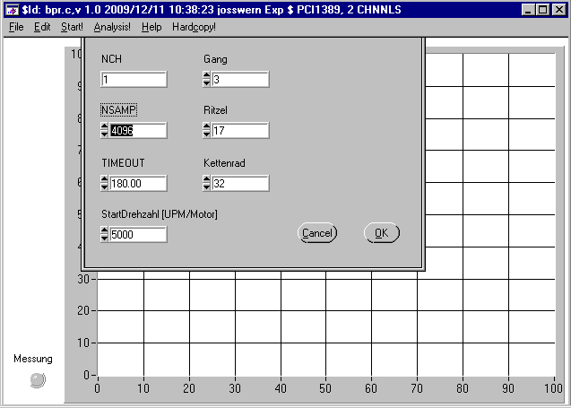
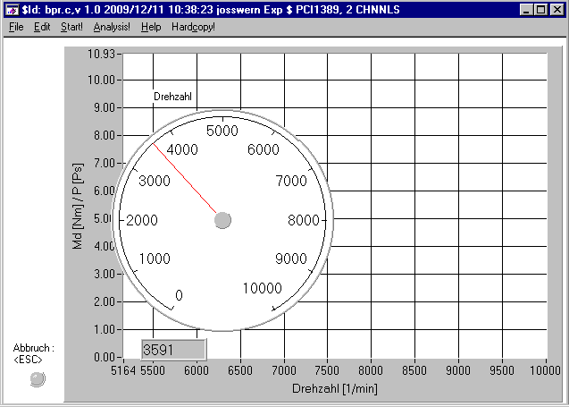
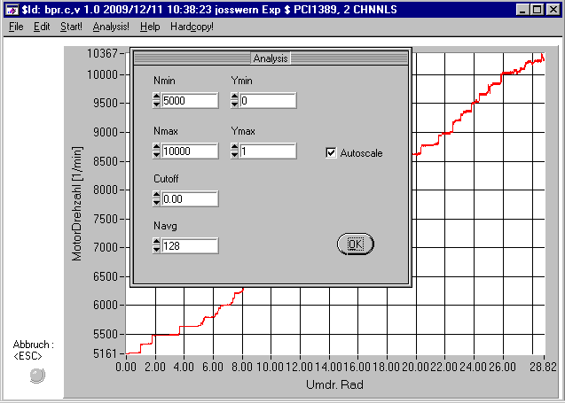

Kurzbeschreibung/Anleitung zum Programm bpr.exe.
Copyright (c) Werner Joss, 2009,2010
bpr.exe ist ein Programm zum Ermitteln der Leistungskurve (P, Md = f(Drehzahl)) von (Verbrennungs-)Motoren
an einem BeschleunigungPRüfstand.
Hierbei wird mittels einer hochgenauen Zeitverlaufs-Messtechnik der exakte Verlauf des Beschleunigungsvorgangs
einer bekannten Schwungmasse gemessen, aus dem sich danach die o.g. Leistungskurve errechnen lässt.
Konkret wird hierbei das Ausgangssignal eines Magnetgebers auf dem Schwungrad verwendet, dieser erzeugt mittels nachgeschalteter Elektronik beim Passieren jedes Zahns des Schwungrades (=Zahnrad) einen Rechteckimpuls.
Der Zeitpunkt des Eintreffens jedes dieser Impulse wird nun mithilfe einer speziellen PCI Einsteckkarte mit einer
Zeitreferenzbasis von 5 MHz aufegzeichnet, dies ist dann die Basis zur Berechnung der Leistungskurve.
Zur Zeit werden folgende PCI Einsteckkarten unterstützt:
- ERMA PCI 1389
- National Instruments PCI6602
Das Programm arbeitet generell mit Rohdaten, d.h. es wird der reine Zeitverlauf einer Messung (=Beschleunigungs/Bremsvorgang des Schwungrads)
gespeichert, die Ergebnisse (P,Md = f(Drehzahl)) werden erst im 2. Schritt mithilfe der aktuellen Versuchsparameter
(Uebersetzung, Gang, Motordaten...) berechnet.
Allgemeine Bedienungshinweise:
Vor jeder Messung müssen die relevanten Parameter (Uebersetzungen, gefahrener Gang...) definiert werden,
dies erfolgt im Menüpunkt 'Edit Setup':

Einmal hier eingestellte Parameter bleiben solange erhalten, bis sie geändert werden, darüberhinaus werden diese beim Progragrammende gespeichert und beim nächsten Start automatisch eingelesen, sodass sie nicht immer wieder neu eingegeben werden müssen (Sessionmanagement).
Die Einstellungsdatei hierzu heisst bpr.ini, folgt in ihrem Aufbau dem bekannten Standard für .ini Dateien und kann mittels Texteditor bearbeitet werden.
Zusätzlich können Vorlagen dieser Datei (z.B. für verschiedene Motoren) unter anderem Namen gespeichert und später eingelesen/direkt verwendet werden ('Load Setup from').
Die eigentliche Messung wird mittels Menüpunkt 'Start' aktiviert:

hierbei wird, falls die unter 'Setup' eingestellte Startdrehzahl grösser 0 ist, zunächst ein 'virtueller Drehzahlmesser' aktiviert, der die aktuelle Motordrehzahl anzeigt.
Erst wenn diese überschritten wird, beginnt der eigentliche Messvorgang. Dies hat den Vorteil, dass man die Anlage einfacher allein bedienen kann (d.h. man kann am PC die Messung starten und dann erst am Prüfstand den Motor bedienen).
Während der Messung werden keine Ergebnisse angezeigt, allerdings kann man den Fortschritt der Messung an der Anzahl der aktuell erfassten Impulse verfolgen, die Messung ist beendet, wenn die voreingestellte Impulszahl erreicht ist. Die Messung kann allerdings jederzeit durch die 'esc' Taste abgebrochen werden, was auch automatisch dann passiert, wenn nach Ablauf der unter 'Timeout' eingestellten Zeit nicht die voreingestellte Anzahl von Messwerten erreicht ist.
Nach der Messung wird zunächst der Zeitverlauf der Motordrehzahl angezeigt, hier kann man einfach erkennen, ob die voreingestellte Impulszahl zum praktischen Messablauf passt (es empfiehlt sich, ausser dem kompletten Hochlauf bis zum Erreichen der Maximaldrehzahl auch den Auslaufvorgang mitzuerfassen, hieraus kann im Nachgang die Verlustleistung bzw. das Bremsmoment des Prüfstands errechnet werden).
Anmerkung zur Messfunktion: das Programm zeigt in der Titelleiste die vom Treiber identifizierte Messkarte (PCI1389 oder NI6602) an - steht hier nichts, so ist entweder wirklich keine Messkarte vorhanden oder es liegt ein System- bzw. Treiberfehler vor (in diesem Fall hilft in der Regel ein Neustart des Rechners - das Windoze-Standardrezept :).
Die interessanten Messergebnisse (Leistungskurve) erhält man anschliessend über den Menüpunkt 'Analysis':

Hier werden Einstellungen zur Skalierung (Autoscale, Ymin, Xmax...) vorgenommen, ebenso wie Parameter die direkten Einfluss auf die berechneten Ergebnisse haben:
- Cutoff: Eckfrequenz eines Kaiser-Bessel Filters (stark vom Messverlauf abhängig)
- Navg: Anzahl Werte für gleitende Mittelung (=Tiefpassfilter)
Hier sollte eine optimale Einstellung durch Versuche ermittelt und anschliessend durchweg weiterverwendet werden, um eine direkte Vergleichbarkeit der Messergebnisse sicherzustellen.
Weitere Hinweise zum Umgang mit den Messdaten-Dateien sowie deren Auswertung:
Ein Messdatensatz besteht immer aus 2 zusammengehörenden Dateien:
- sog. Headerdaten - testXYZ.dat
- die eigentlichen Messdaten - testXYZ.asc
entsprechend der Konventionen für das DIADEM Messdaten-Format - siehe Datei dmheader.pdf.
Deswegen unbedingt beachten:
- Dateien immer nur zusammen kopieren/weitergeben
- Dateien nicht nachträglich umbenennen (falls doch: auch Eintrag/Verweis auf .asc in .dat Datei ändern!)
- beide Dateien (.dat/.asc) sind reine Textdateien und können daher mit jedem Texteditor geöffnet (bearbeitet - s.o.) werden
Zusätzlich verfügt das Messprogramm über eine Ergebnis-Exportfunktion (File:Export Results),
hierbei wird eine Textdatei (.txt/.csv) erzeugt, die in 3 Spalten (Drehzahl,Drehmoment,Leistung) die Berechnungsergebnisse enthält.
Diese Datei kann dann z.B. mit excel (.csv), matlab/octave/gnuplot (.txt) weiterverarbeitet werden.
Hinweise zur Installation auf PC's ohne Messhardware:
Das Programm kann auch als reines Auswertprogramm auf PC's ohne Messkarte installiert werden. Hierzu sind folgende Voraussetzungen notwendig:
Rechtlicher Hinweis - Copyright (c) 2009,20010:
Dieses Programm wurde erstellt und ist Eigentum von
Werner Joss
Robert-Kochstr.2
76351 Linkenheim
und darf ohne Erlaubnis/Zustimmung nicht an Dritte weitergegeben werden!